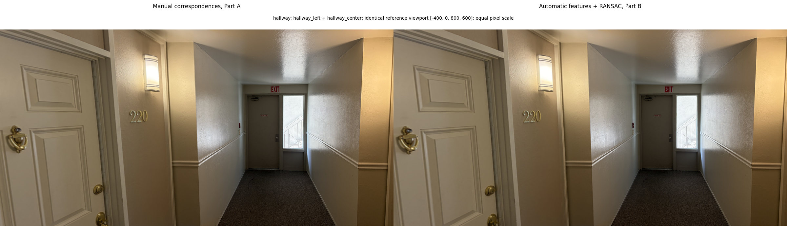
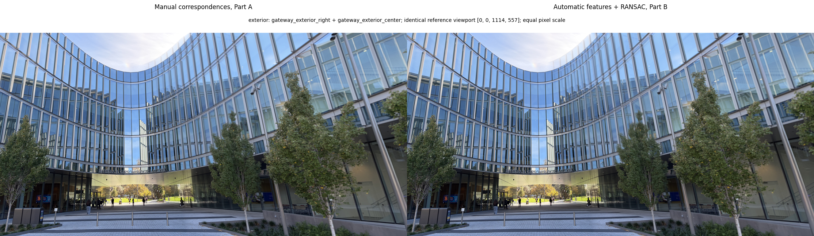
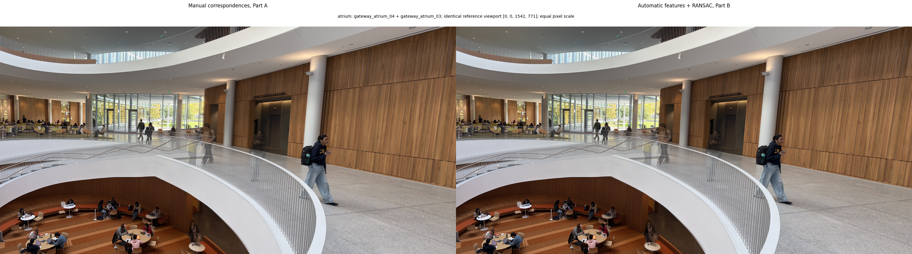
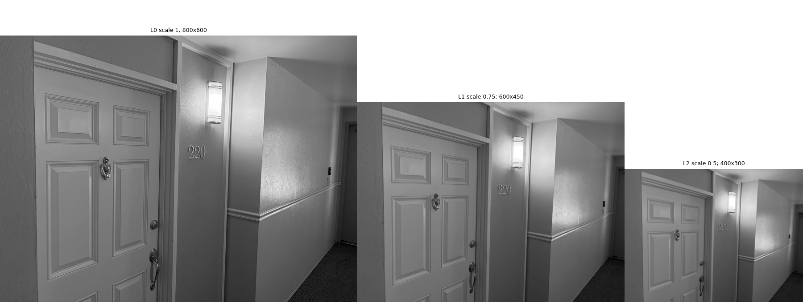
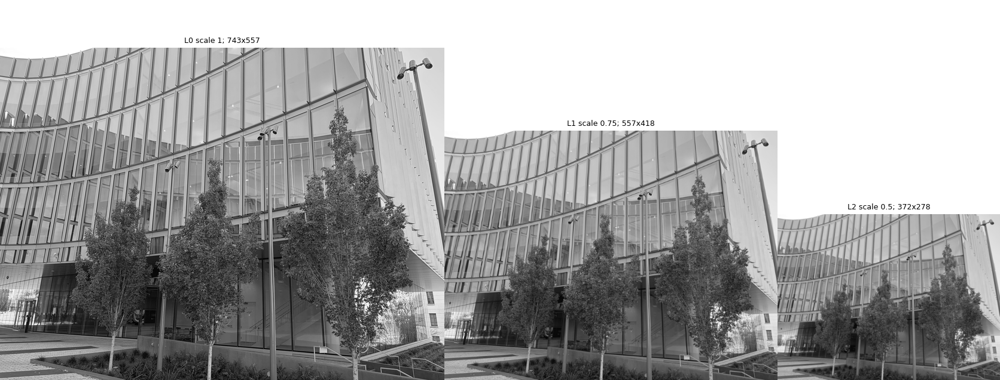
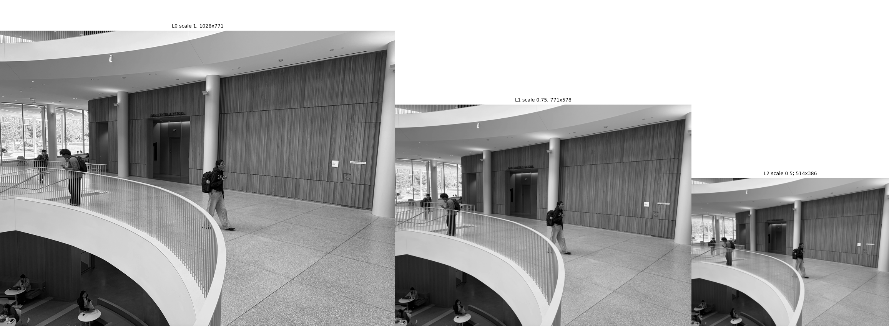
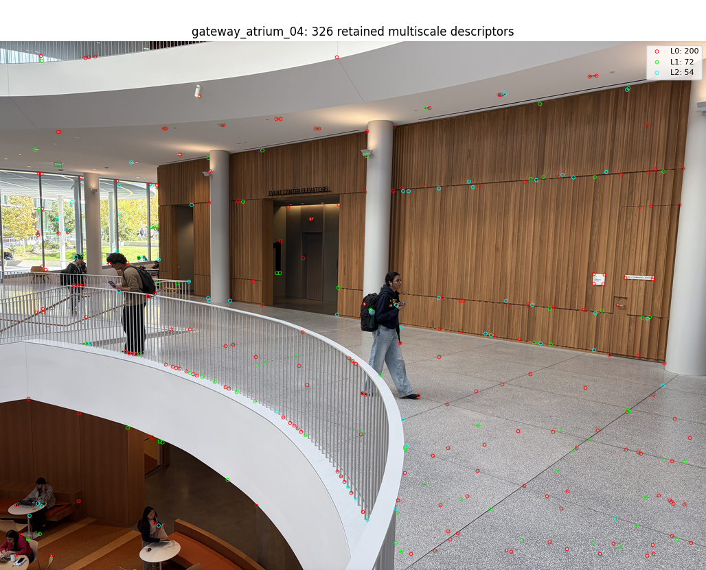
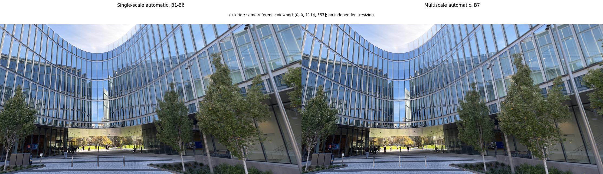
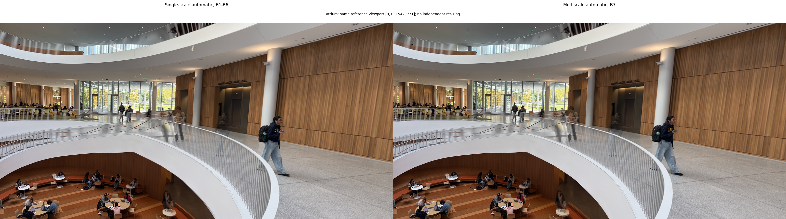

PROJECT 4 / PARTS A + B
From manual geometry to automatic matching
Part A selects correspondences manually. Part B replaces that selection with Harris detection, ANMS, normalized patches, Lowe matching and four-point RANSAC. Both use the same custom homography warping and feather blending. The results are useful registrations with documented geometric limitations.
B.1 · Harris + ANMSB.2 · DescriptorsB.3 · MatchingB.4 · RANSAC + mosaicsB.5 · Multiscale
01 / OVERVIEW
Introduction
This project estimates homographies from manually matched features, inverse-warps images with custom nearest-neighbor and bilinear sampling, and combines valid pixels with feather weights. Real experiments include two rectifications, three planar mosaics, and a cylindrical panorama.
Image coordinates are (x = column, y = row), with upper-left pixel center (0,0). EXIF orientation is applied in memory before selecting points. Matrices act on column vectors and map source to destination. All original JPEGs are preserved.
02 / PHOTOGRAPHS
A.1 · Shoot and digitize pictures
I captured overlapping views of an apartment hallway, the Gateway exterior, and the Gateway atrium. The accepted planar mosaics use the two views shown for each scene; extra captures were evaluated separately. The original oriented panorama photographs are 5712×4284. The viewpoint changes reveal perspective and foreground parallax; a perfectly fixed optical center is not claimed.


03 / GEOMETRY
A.2 · Recover homographies
A planar homography has eight independent coefficients after fixing h33=1. For a source feature (x,y) and its match (u,v):
(1) Source-to-target homogeneous mapping
[u,v,1]ᵀ ∼ H [x,y,1]ᵀ H = [[h11,h12,h13], [h21,h22,h23], [h31,h32,1]] u=(h11*x+h12*y+h13)/(h31*x+h32*y+1) v=(h21*x+h22*y+h23)/(h31*x+h32*y+1)
(2) Explicit least-squares system
h = [h11,h12,h13,h21,h22,h23,h31,h32]ᵀ A[2i] = [x, y, 1, 0, 0, 0, -u*x, -u*y] A[2i+1] = [0, 0, 0, x, y, 1, -v*x, -v*y] b[2i]=u; b[2i+1]=v A ∈ ℝ^(2N×8); A h = b numpy.linalg.lstsq(A, b, rcond=None)
The custom computeH uses float64 least squares and rejects nonfinite, rank-deficient or singular solutions. With more than four pairs, the system is overdetermined. It minimizes algebraic error; coordinates are not normalized and no RANSAC or automatic matching is used.
04 / ACTUAL MANUAL DATA
Correspondences and recovered matrix
 Open full-size image
Open full-size imageThis accepted pair produces a 20×8 system. Its first measured pair contributes these actual two rows (rounded for display), with the shown right-hand side:
1169.3 3375 1 0 0 0 -4.2474e+06 -1.226e+07 0 0 0 1169.3 3375 1 -3.9801e+06 -1.1488e+07 b[0:2] = [3632.542580645164, 3403.9309677419355]
The actual source-to-reference homography, normalized to H[2,2]=1, is:
0.366669495 -0.0630069561 2913.12293 -0.194094227 0.802854869 447.626515 -0.000106941797 -3.9579577e-06 1
Forward residuals for this pair have median 5.43 px, mean 6.35 px, and maximum 12.59 px in original target-image coordinates. Small training residuals do not prove alignment at other depths.
| Source → target | N | Median / maximum px |
|---|---|---|
| Hallway left → center | 8 | 9.15 / 17.61 |
| Hallway right → center | 8 | 6.83 / 23.74 |
| Exterior left → center | 9 | 32.44 / 91.17 |
| Exterior right → center | 10 | 9.09 / 28.80 |
| Atrium 01 → 02 | 10 | 6.71 / 12.17 |
| Atrium 02 → 03 | 10 | 7.65 / 10.21 |
| Atrium 04 → 03 | 10 | 5.43 / 12.59 |
| Atrium 05 → 04 | 10 | 7.02 / 14.18 |
There are 75 confirmed pairs in total. The high-error exterior left → center experiment is retained as a diagnostic and excluded from the accepted exterior mosaic. No confirmed points were removed or replaced.
05 / SAMPLING
A.3 · Warp the images
Inverse warping visits each destination pixel center, applies H⁻¹, divides by the homogeneous coordinate, and samples the source. This avoids forward-splatting holes inside valid source support.
(3) Inverse coordinates
[a,b,c]ᵀ = H⁻¹ [x_d,y_d,1]ᵀ s_x=a/c; s_y=b/c x_d=xmin+column; y_d=ymin+row
Nearest neighbor reads (floor(sx+0.5), floor(sy+0.5)). Bilinear interpolation weights the four source neighbors manually:
(4) Bilinear intensity
x0=floor(s_x); y0=floor(s_y) α=s_x-x0; β=s_y-y0 I=(1-α)(1-β)I[y0,x0] + α(1-β)I[y0,x1] + (1-α)β I[y1,x0] + αβ I[y1,x1]
At the last row/column, the repeated boundary neighbor preserves the sample value. Finite inverse coordinates must lie within source pixel-center bounds; other samples remain invalid in a separate mask. Canvas origins preserve negative destination coordinates. The implementation rejects singular transforms, horizon crossings and unsafe allocations.
06 / REAL RECTIFICATIONS
A.3 · Two rectification experiments
The human selected logical TL, TR, BR, BL corners on the front cover and display surface. They map to (0,0), (w−1,0), (w−1,h−1), (0,h−1). The same full-resolution oriented source, H and rectangle were used by both samplers. The displayed rectangles are explicit extractions from saved complete warped canvases; every extracted pixel is valid.
Game case · 497×801


Switch display · 961×541


| Photograph | Nearest | Bilinear |
|---|---|---|
| Game case | 0.1425 (0.1414–0.1450) | 0.3161 (0.3122–0.3168) |
| Switch display | 0.1776 (0.1769–0.1800) | 0.4035 (0.3973–0.4100) |
Timings include warp validation and allocation of the full canvas, excluding loading, H estimation, rectangle extraction, saving, plotting and clicking. Environment: arm64 macOS, Python 3.9.6, NumPy 2.0.2. Bilinear took about 2.2× the nearest time here; this is not an end-to-end or universal speed claim. Maximum four-corner errors were 4.26×10⁻⁸ px and 3.52×10⁻⁸ px, small by construction with four fitted pairs.
07 / PLANAR COMPOSITION
A.4 · Blend images into mosaics
Each accepted scene uses two photographs, with its central view as reference and identity H. The other direct H maps into that reference. Existing custom bilinear inverse warps populate a common canvas with boolean validity masks. Dark photographed pixels remain valid; RGB intensity is not a validity test.
(5) Distance feathering
d_i(p)=distance to nearest invalid mask sample w_i(p)=d_i(p)/Σ_j d_j(p), if Σ_j d_j(p)>0 I_out(p)=Σ_i w_i(p) I_i(p) M_union(p)=[Σ_j d_j(p)>0]
A SciPy Euclidean distance transform supplies mask distances, including an invalid padding ring. Weights sum to one on the valid union. Each source contributes both overlap and exclusive new pixels. Full registered footprints are retained privately; the displayed frames below are documented reference-coordinate crops made after registration and blending, not the full footprints.
Hallway · left + center
 Open full-size image
Open full-size imageMolding and the exit doorway remain coherent. The left door expands under the planar projection; local foreground parallax and softness remain. The tighter frame preserves new content from both images without claiming the three-image footprint is distortion-free.
Gateway exterior · center + right
 Open full-size image
Open full-size imageArchitectural lines are broadly coherent. Trees and the far-right façade are softer and somewhat stretched. The failed left-to-center alignment is excluded rather than presented as a successful three-frame stitch.
Gateway atrium · 03 + 04
 Open full-size image
Open full-size imageElevator, columns and balcony structure are readable, but moving people create translucent ghosts and railings show local misalignment. Feathering smooths contribution boundaries; it cannot correct geometry or subject motion. A five-frame planar attempt crossed the projective horizon and is not claimed as a completed mosaic.
08 / CS 280A EXTENSION
A.5 · Cylindrical projection
The accepted nonplanar result uses the same atrium 03+04 photographs. Each source is projected directly from its orientation-corrected working photograph, not by bending a planar mosaic. The centered mapping and inverse are:
(6) Forward cylindrical map
c_x=(width−1)/2; c_y=(height−1)/2 u=f atan((x−c_x)/f) v=(y−c_y) f/√((x−c_x)²+f²)
(7) Inverse cylindrical sampling
θ=u/f; |θ|<π/2 x=c_x+f tan(θ) y=v/cos(θ) + c_y
Output pixels use this inverse and the existing manual bilinear sampler. Invalid samples have mask false. Sources are downscaled once before projection; f scales by the same factor. Projection origins are shifted by integer global translations, without resampling the projected images again.
(8) Manual translation registration
Δ_source→target = median_i(C(p_target,i)−C(p_source,i)) O_03=(0,0); O_04=Δ_04→03 I_cyl=feather_blend(shift(C(I_i), O_i))
The median is computed componentwise from all ten confirmed 04→03 pairs, without filtering. Rounded working offsets differ by at most 0.5 px per axis. Median/mean/maximum residuals are 25.86/46.21/132.90 original-resolution cylindrical pixels, not planar residuals or preview-sized values. Translation is approximate because capture is not calibrated pure yaw.


 Open full-size image
Open full-size imageEXIF records 5.96 mm focal length and 26 mm full-frame equivalent. Sensor/crop/stabilization calibration is unavailable, so these are rough starting clues. The selected f=5400 px is an empirical registration/visual choice, not verified camera calibration. Its single-image horizontal field of view is 55.74° in this model.
 Open full-size image
Open full-size image
Cylindrical projection reduces peripheral planar stretching and keeps the panorama bounded. Horizontal lines may curve on the cylinder; vertical architectural structure is generally better preserved here. Some railing misalignment and moving-person ghosts remain. Five-frame and central-three cylindrical attempts rendered but were rejected as primary evidence because of stronger doubled stairs/railings and cumulative drift. Only two sources are claimed in the accepted result.
09 / LIMITATIONS
Limitations
Unnormalized algebraic least squares is sensitive to coordinate scale and incorrect matches. Planar homographies cannot align multiple depths under camera translation, and wide fields can cross their projective horizon. Feathering cannot remove parallax, moving subjects or exposure changes. Cylindrical translation assumes approximately compatible viewing directions and a centered principal point; an empirical focal length is not a camera calibration.
10 / CONCLUSIONS
Implementation and conclusions
Custom homography estimation and inverse sampling support both rectifications and the three real planar scenes. The nearest/bilinear comparison demonstrates a measured speed–smoothness tradeoff. Narrower planar subsets and explicit display framing avoid overstating success on wider captures. Cylindrical projection provides a different wide-view geometry, while its residuals and visible ghosts make the registration limitations clear.
Numerical validation: 216 regression tests passed after the A.5 experiment, with further report-asset checks performed during preparation. NumPy handles the linear solve; Pillow handles image I/O and derivative resizing; Matplotlib provides figures; SciPy is used only for the feather distance transform. No high-level library homography, warp or stitcher replaces the custom implementations.
Assignment references: Fall 2026 Part A and project overview. Methods and examples were organized against the supplied Fall 2026 requirements. This report does not claim a newly verified camera calibration or perfect photographic seams.
Sources and assistance
Photographs and human-confirmed feature selections were supplied by the author. OpenAI Codex assisted with implementation, tests, experiment orchestration and report preparation. Actual numerical outputs and image results were inspected locally. This disclosure does not replace any additional acknowledgment required by the applicable course policy.
PART B / AUTOMATIC CORRESPONDENCES
B.1 · Harris corners and ANMS
Harris corners supply repeatable intensity changes in two directions. The reviewed Berkeley Harris starter motivates the scikit-image corner_harris(method="eps") adapter: sigma 1, relative response threshold 0.01, minimum peak separation 1 and strict 20-pixel border exclusion. Images use EXIF-corrected orientation and Rec.709 luminance. Coordinates are (x=column, y=row).
Adaptive non-maximal suppression (ANMS) retains spatially isolated strong candidates. For corner i, its radius is the distance to the nearest candidate j satisfying the strict robust condition below. No qualifying neighbor gives infinite radius. Select 500 by decreasing radius, breaking ties by strength and then y/x. This is feature selection, not matching.
(B1) Robust suppression, c=0.9
r_i = min_j ||p_i − p_j||, where f_i < 0.9 f_j and j ≠ i
The source photographs are retained in Figures 1–3. Here the raw and selected overlays use the same pixels, making the selection effect visible.
| Photograph | Harris | ANMS |
|---|---|---|
| hallway_left | 712 | 500 |
| hallway_center | 1195 | 500 |
| gateway_exterior_center | 3920 | 500 |
| gateway_exterior_right | 5097 | 500 |
| gateway_atrium_03 | 5698 | 500 |
| gateway_atrium_04 | 5786 | 500 |
 Open full-size image
Open full-size image Open full-size image
Open full-size imagePART B / PATCH REPRESENTATION
B.2 · Normalized feature descriptors
Each selected corner uses a nominal 40×40 native-pixel neighborhood. Gaussian blur with sigma 2 (reflect boundaries, truncate 4) precedes bilinear sampling of an 8×8 grid at five-pixel spacing. Offsets are −17.5, −12.5, …, 17.5 in both axes. Flatten row-major into 64 float64 values, subtract the patch mean and divide by population standard deviation. Reject out-of-bounds support and standard deviation ≤10⁻⁸.
(B2) Patch normalization
D = (P − mean(P)) / std(P), ddof=0
All six photographs produced 500 valid descriptors from 500 selected locations. This MOPS-style baseline is axis-aligned; it does not claim rotation invariance or the complete oriented/wavelet MOPS pipeline. No SIFT or ORB replaces the patch implementation.
 Open full-size image
Open full-size image Open full-size image
Open full-size imagePART B / DESCRIPTOR SEARCH
B.3 · Automatic feature matching
For every source descriptor, find the nearest and second-nearest destination rows by Euclidean distance. Accept strictly when d₁/d₂ < 0.80. The threshold is an experimental default. A zero second-neighbor distance is ambiguous and rejected. Matching is directional, with no mutual or unique-target filter; several sources can choose one destination.
The accepted pre-RANSAC counts are 129 hallway, 47 exterior and 82 atrium. A threshold sweep from 0.60 to 0.90 yielded 55–212, 12–119 and 48–144 matches respectively. More permissive matching supplies more candidates, not proven geometric accuracy. Repeated windows, rails and non-overlap content remain ambiguous.
 Open full-size image
Open full-size image Open full-size image
Open full-size image Open full-size image
Open full-size imagePART B / ROBUST GEOMETRY
B.4 · Four-point RANSAC and automatic mosaics
Sample four candidate pairs, estimate source-to-reference H using the custom eight-unknown linear solve, project every source candidate and count errors strictly below 4 working-image pixels. Keep the best consensus and refit using its inliers, then reclassify. Degenerate samples are rejected. All scenes use seed 2804 and 5000 trials; no manual points or manual H guide fitting.
(B3) Forward reprojection error
q̂_i = dehomogenize(H [x_i, y_i, 1]ᵀ) e_i = ||q̂_i − q_i||₂; inlier ⇔ e_i < 4 working pixels
| Scene | Source → reference | Candidates | Inliers | Median px | Mean px | Max px |
|---|---|---|---|---|---|---|
| hallway | hallway_left -> hallway_center | 129 | 87 | 0.888662 | 1.073190 | 3.997519 |
| exterior | gateway_exterior_right -> gateway_exterior_center | 47 | 30 | 1.029501 | 1.168333 | 3.138645 |
| atrium | gateway_atrium_04 -> gateway_atrium_03 | 82 | 52 | 1.447448 | 1.596076 | 3.949551 |
 Open full-size image
Open full-size image Open full-size image
Open full-size image Open full-size image
Open full-size imageThree real automatic mosaics
The automatic H replaces only manual correspondence recovery. Part A inverse bilinear warping, validity masks and distance feathering are reused unchanged. The reference image has identity H. Full footprints remain saved privately; each comparison below uses the same documented reference-space display viewport on both sides, without independent zooming.


Open full-size image

Open full-size image

Open full-size imageAll three are computed automatic mosaics with quality limitations. RANSAC rejects many descriptor mismatches, but small pointwise residuals on overlap do not validate extrapolated regions, remove depth-dependent parallax or align moving people.
PART B / CS 280A EXTENSION
B.5 · Multiscale feature processing
Build three Gaussian pyramid levels directly from the same base working luminance image at nominal scales 1.00, 0.75 and 0.50. For actual ratio s on each axis, prefilter sigma is 0.5√(s⁻²−1), using reflect boundaries and truncate 4, then bilinearly sample at half-pixel resize centers. Level zero is an exact luminance copy. Harris, ANMS and descriptor extraction run independently on each level's actual image signal.
| Scene | 1.00 | 0.75 | 0.50 |
|---|---|---|---|
| Hallway | 800×600 | 600×450 | 400×300 |
| Exterior | 743×557 | 557×418 | 372×278 |
| Atrium | 1028×771 | 771×578 | 514×386 |


Open full-size image

Open full-size image

Open full-size imageFeature budgets are 200/175/125, a total nominal 500 per photograph rather than 500 per level. Unused quota is not redistributed. Descriptors retain the same native 40×40 support, so coarse levels describe larger physical regions. Store native coordinates and level IDs, then convert once before matching geometry:
(B4) Half-pixel level-to-base mapping
s_x = W_level / W_base; s_y = H_level / H_base x_base = (x_level + 0.5) / s_x − 0.5 y_base = (y_level + 0.5) / s_y − 0.5
Actual rounded dimensions determine these ratios. All RANSAC thresholds and homographies use base working-image pixels. Cross-level descriptor matches are allowed, using the unchanged Euclidean ratio <0.80, seed 2804, 5000 trials and 4-pixel threshold.
Primary deduplication keeps finer features first, preserving ANMS order within a level, and suppresses coarser features within 3 base pixels. It never compares Harris responses between scales. This removed many coarse features; realized totals are substantially below 500. Hallway center had only 112 coarse candidates, leaving 13 unused slots even before suppression.
| Photograph | Harris | ANMS / valid descriptors before dedup | Retained descriptors |
|---|---|---|---|
| hallway_left | 712 / 392 / 213 | 200 / 175 / 125 | 200 / 57 / 41 |
| hallway_center | 1195 / 298 / 112 | 200 / 175 / 112 | 200 / 102 / 45 |
| gateway_exterior_right | 5097 / 2736 / 1124 | 200 / 175 / 125 | 200 / 76 / 47 |
| gateway_exterior_center | 3920 / 2396 / 1201 | 200 / 175 / 125 | 200 / 80 / 50 |
| gateway_atrium_04 | 5786 / 2112 / 657 | 200 / 175 / 125 | 200 / 72 / 54 |
| gateway_atrium_03 | 5698 / 3268 / 1306 | 200 / 175 / 125 | 200 / 77 / 52 |


Open full-size image Open full-size image
Open full-size image Open full-size image
Open full-size imageMeasured comparison: mixed results
| Scene | Configuration | Matches | Inliers | Median px |
|---|---|---|---|---|
| hallway | Single-scale | 129 | 87 | 0.888662 |
| hallway | Multiscale, 3 px dedup | 71 | 44 | 0.986186 |
| hallway | Diagnostic, no dedup | 97 | 68 | 0.889464 |
| exterior | Single-scale | 47 | 30 | 1.029501 |
| exterior | Multiscale, 3 px dedup | 20 | 11 | 0.731748 |
| exterior | Diagnostic, no dedup | 23 | 13 | 0.736534 |
| atrium | Single-scale | 82 | 52 | 1.447448 |
| atrium | Multiscale, 3 px dedup | 63 | 37 | 1.920991 |
| atrium | Diagnostic, no dedup | 83 | 58 | 1.033507 |
Cross-level accepted matches number 18/71 hallway, 4/20 exterior and 30/63 atrium. Fine-to-fine remains the largest level pair. The primary multiscale configuration has fewer inliers in every scene. Exterior's lower median comes from only 11 inliers and does not prove better upper-façade geometry.
The separate no-deduplication diagnostic preserves the same nominal budget and yields 68, 13 and 58 inliers. Atrium's higher count can include correlated cross-scale repeats; it is not proof of an improved panorama. Neither diagnostic replaces the default or the single-scale baseline.



Open full-size image

Open full-size imageFeature extraction, including pyramid, detection, selection, description and deduplication, measured about 1.5–2.6× the current single-scale feature time in one local run per configuration; plotting and export are excluded. Budget allocation and deduplication sensitivity confound a pure scale comparison. Repeated architecture, spatial match distribution, motion, parallax and extrapolation remain challenges. Multiscale processing does not consistently improve the observed mosaics.
COMBINED / TAKEAWAYS
Manual, automatic and multiscale
Automatic correspondence selection recovers useful homographies from these real photographs. RANSAC removes many incorrect patch matches, while manual and automatic pipelines share warping and blending. Accurate projected points do not make a multi-depth scene planar. Architectural repetition, foreground extrapolation and moving people remain visible failure modes. The multiscale extension is operational, with mixed or negative findings under these defaults.
Implementation and reproducibility
The private implementation contains Harris detection, robust ANMS, normalized MOPS-style patches, directional Lowe matching, custom four-point RANSAC and multiscale wrappers. Source code is submitted privately through Gradescope; this static website contains only report text, CSS and reviewed PNG derivatives. No private source repository is linked.
The B7 implementation regression result was 430 passing tests, zero failures or skips. The original Part A validation paragraph describes its historical environment and scope; Part B additionally uses SciPy Gaussian filtering and the reviewed scikit-image Harris adapter. Independent synthetic tests cover reprojection, sampling, feature provenance and coordinate conversions. These validate numerical behavior, not the absence of photographic seams.
Sources and assistance
Brown, Szeliski and Winder, Multi-Image Matching using Multi-Scale Oriented Patches (CVPR 2005), motivates ANMS, low-frequency patches and multiscale processing; the locally retained course copy was consulted. The previously reviewed Berkeley Harris starter informed the Harris adapter. The supplied Fall 2026 Part B deliverables guide this report; current-year HTML was not independently fetched in this offline milestone. Prior-year wording is not represented as newly verified Fall 2026 policy.
Author-supplied photographs, measured outputs and existing Part A acknowledgments are preserved. OpenAI Codex assisted with Part B implementation, tests, experimental orchestration and combined report preparation. This disclosure does not replace additional course-required acknowledgments.